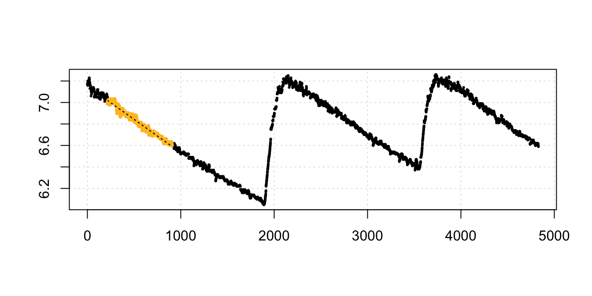

Analysis of intermittent-flow data
Intermittent-flow respirometry
Intermittent-flow respirometry involves obtaining multiple replicates in an experiment by periodically flushing the respirometer with fresh treatment water or air after a set period of time or \(O_2\) decrease. Typically, the oxygen sensing system is left recording during flushes. If the dataset is not split into the separate replicates, this results in an dataset with oscillating levels of oxygen, which may be tricky to analyse.
The example data, intermittent.rd, contains intermittent-flow measurements of oxygen consumption in the sea urchin Heliocidaris erythrogramma. Detailed information about the data, including its source and methods, can be obtained with the command ?intermittent.rd.
We can use inspect_data() to scan for errors in the data frame and preview the data.
urchin_int <- inspect_data(intermittent.rd)
#> O2 : num [1:4831] 7.17 7.17 7.18 7.16 7.2 7.2 7.16 7.16 7.19 7.18 ...
#> Time : int [1:4831] 0 1 2 3 4 5 6 7 8 9 ...
#> ---
#> Score
#> No NA/NaN in time PASS
#> No NA/NaN in Oxygen PASS
#> Sequential Time PASS
#> Non-duplicated Time PASS
#> Evenly-spaced Time PASS
#> New dataframe generated.
We can see from the top plot that this dataset has three replicates. The flush periods obviously skew the bottom rate plot, however uptake rates appear to be consistent within each experimental replicate.
Using calc_rate on intermittent-flow data
While we intend in the future to support intermittent data directly with a dedicated function to automatically identify and subset replicates, intermittent data can be analysed quite easily via the main calc_rate function with a little organisation.
Subsetting by row and time
The calc_rate function supports input of multiple subset regions by row or time. The from and to operators can be vectors with paired values:
urchin_int_rates <- calc_rate(urchin_int, from = c(200, 2300, 4100), to = c(1800,
3200, 4600), by = "time")
print(urchin_int_rates)
#> Rate(s):
#> [1] -0.0005734109 -0.0006097325 -0.0006539752Calling summary() will show the coefficients and locations of each subset:
summary(urchin_int_rates)
#> Summary:
#> intercept_b0 rate_b1 rsq row endrow time endtime oxy endoxy
#> 1: 7.127202 -0.0005734109 0.995 201 1801 200 1800 7.05 6.11
#> 2: 8.528274 -0.0006097325 0.990 2301 3201 2300 3200 7.12 6.58
#> 3: 9.731918 -0.0006539752 0.967 4101 4601 4100 4600 7.08 6.73
#> rowlength timelength rate_twopoint
#> 1: 1600 1600 -0.0005875
#> 2: 900 900 -0.0006000
#> 3: 500 500 -0.0007000We can also use plot() to view the diagnostic plots of any individual replicate. The argument rep determines which data subset to plot:
plot(urchin_int_rates, rep = 2)
#> Plotting...this may take a while for large datasets.
We can also query multiple regions of each replicate (which could overlap, although this would obscure the output plot):
calc_rate(urchin_int, from = c(200, 900, 2300, 2900, 4000, 4400), to = c(700,
1700, 2700, 3300, 4300, 4700), by = "time")#> Rate(s):
#> [1] -0.0006790314 -0.0005463056 -0.0005853780 -0.0005705494 -0.0006845746
#> [6] -0.0006334074Rates can be easily extracted for further analysis or selection. For instance, we may be interested in the lowest rate, the one most representative of basal metabolic rates. Of course because rates are negative, the minimum value in negative terms would actually represent the highest rate, so we should extract the maximum (least negative) value, or transform the rates first:
urchin_int_rates$rate
#> [1] -0.0005734109 -0.0006097325 -0.0006539752
min(-1 * urchin_int_rates$rate)
#> [1] 0.0005734109Or we may be more interested in the mean rate:
mean(urchin_int_rates$rate)
#> [1] -0.0006123729Subsetting by oxygen
If we are interested in looking at rates over particular oxygen ranges within each replicate, calc_rate will find the first match to the range entered:
calc_rate(urchin_int, from = 7, to = 6.6, by = "o2")
#> Rate(s):
#> [1] -0.0006191943To examine the same range in each replicate, we can follow a number of approaches. We can call the data range containing another replicate directly from the original dataset, or inspect_data object element:
calc_rate(intermittent.rd[2100:3500, ], from = 7, to = 6.6, by = "o2")
#> Rate(s):
#> [1] -0.000615731
calc_rate(urchin_int$df[2100:3500, ], from = 7, to = 6.6, by = "o2")
#> Rate(s):
#> [1] -0.000615731
Or we can subset them manually into new dataframes, and process them separately through the entire workflow. This would also be a necessary procedure to examine each replicate in auto_rate to determine minimum, maximum or best fit rates within each.
# Create separate replicate data frames
u_rep1 <- intermittent.rd[1:1900, ]
u_rep2 <- intermittent.rd[2100:3500, ]
u_rep3 <- intermittent.rd[3700:4831, ]
# Process one in `inspect_data` (output not shown)
u_rep3_c <- inspect_data(u_rep3)calc_rate(u_rep3_c, from = 7, to = 6.6, by = "o2")
#> Rate(s):
#> [1] -0.0006188192Background adjustments
The adjust_rate function can be used on calc_rate objects containing multiple rate values:
urchin_int_rates_adj <- adjust_rate(urchin_int_rates, by = -5e-05)
print(urchin_int_rates_adj)
#> Note: please consider the sign of the value while correcting the rate.
#> Input rate: -0.0005734109 -0.0006097325 -0.0006539752
#> Adjustment: -5e-05
#> Adj. rate: -0.0005234109 -0.0005597325 -0.0006039752We can see each individual rate has been adjusted, and the new rates can be extracted from the resulting object using $corrected.
Converting rates
Once the rates have been determined, they can be converted to volume-corrected or mass-specific rates using convert_rate.
convert_rate(urchin_int_rates_adj, o2.unit = "mg/L", time.unit = "s", output.unit = "mg/h/g",
volume = 2.379, mass = 0.006955)
#> Input:
#> [1] -0.0005234109 -0.0005597325 -0.0006039752
#> [1] "mg/L" "sec"
#> Output:
#> [1] -0.6445291 -0.6892556 -0.7437362
#> [1] "mg/hour/g"